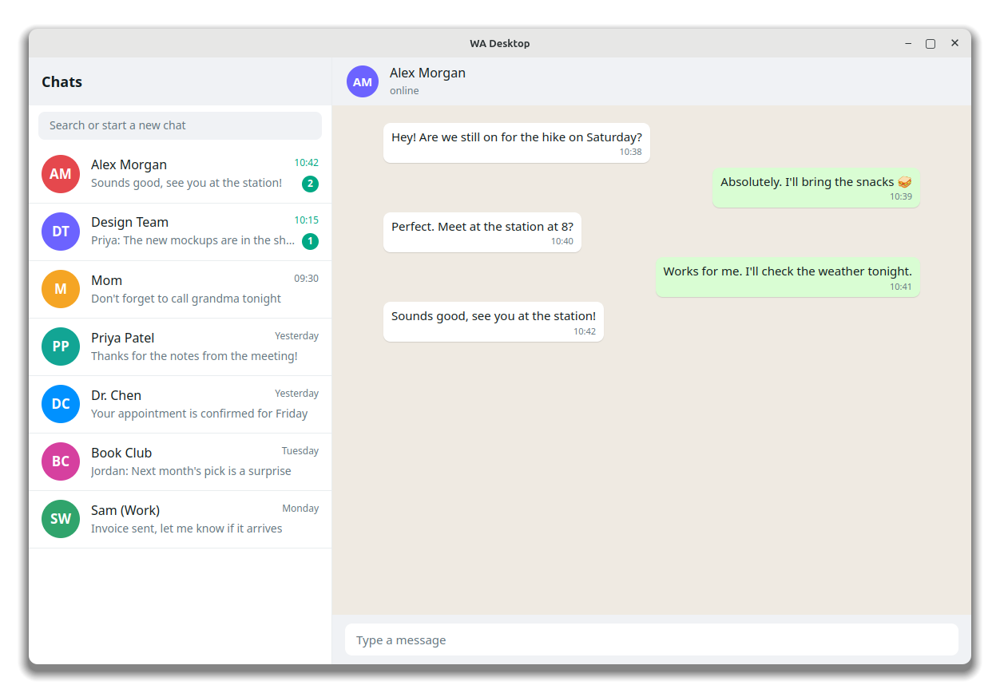
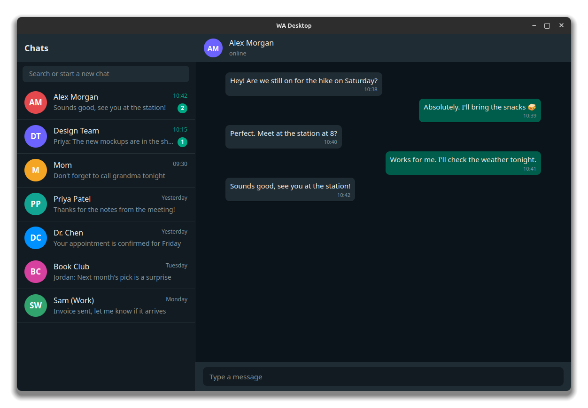
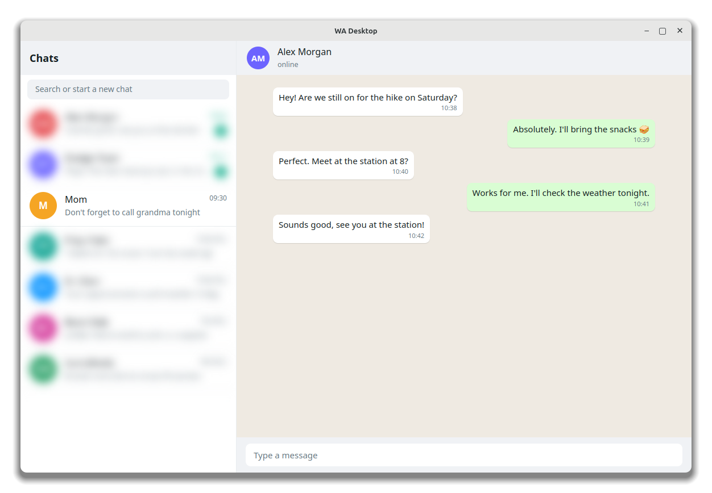
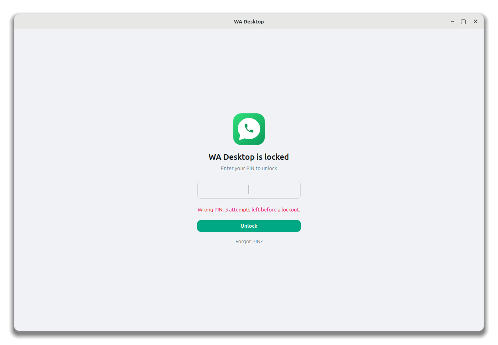
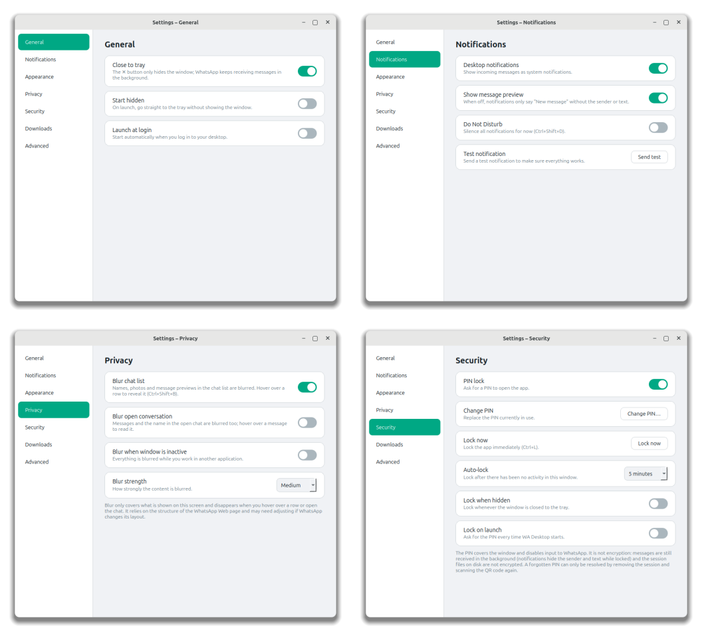
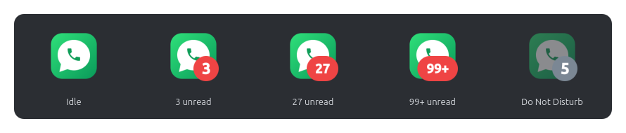

WhatsApp in its own window, without a browser.
WA Desktop is a free, open-source desktop client for WhatsApp Web. It lives in your system tray, shows native notifications, and can lock itself with a PIN or blur your chats when someone looks over your shoulder.
- Linux
- Windows 10 / 11
- macOS 12+
- MIT licensed


Features
Everything you expect from a desktop messenger, around the official WhatsApp Web client.
Tray icon and unread badge
The unread count appears on the tray icon, the Windows taskbar and the macOS Dock. Closing the window keeps WhatsApp running in the background.
Native notifications
Messages arrive as system notifications. Click one to open the chat. Do Not Disturb and a "hide message preview" option are one click away.
PIN lock
Lock manually, after inactivity, when hidden or on launch. PINs are stored as a salted PBKDF2 hash, with an increasing lockout after wrong attempts.
Privacy blur
Blur the chat list, the open conversation, or everything while the window is in the background. Hover over a row to reveal it.
Light and dark themes
Follows your system theme live, for both the app and WhatsApp Web itself, or pick one yourself.
Private by design
No telemetry and no servers of our own. The app talks only to WhatsApp, and your messages stay end-to-end encrypted.




Download
All files are on the latest
GitHub release, together with a SHA256SUMS.txt file to verify them.
Windows
- Installer:
WA-Desktop-<version>-windows-x64-setup.exe - No installation:
…-windows-x64-portable.zip - Windows 10 or 11, 64-bit
macOS
- Apple silicon (M1 and newer):
…-macos-apple-silicon.dmg - Intel Macs:
…-macos-intel.dmg - macOS 12 Monterey or newer
Linux
- Ubuntu, Debian, Mint:
wadesk_<version>-1_amd64.deb - Any distribution:
…-linux-x86_64.AppImage - Or from source with
install.sh
Install
The packages are not signed with a paid certificate, so Windows and macOS show a warning the first time. Here is how to open them.
Ubuntu, Debian, Linux Mint (.deb)
sudo apt install ./wadesk_*_amd64.debThen open WA Desktop from the application menu, or run wadesk. Works on
Ubuntu 22.04 and newer, Debian 12 and newer and Linux Mint 21 and newer. To remove it:
sudo apt remove wadesk.
Other distributions (AppImage)
chmod +x WA-Desktop-*-linux-x86_64.AppImage
./WA-Desktop-*-linux-x86_64.AppImageFrom source
git clone https://github.com/pahrulirfan/wa-desktop.git
cd wa-desktop
./install.shThe installer works for your user only and asks before installing system libraries with apt.
See the README for Fedora, Arch and
other options.
- Download
WA-Desktop-<version>-windows-x64-setup.exeand run it. - If Windows SmartScreen says "Windows protected your PC", click More info, then Run anyway.
- The installer needs no administrator rights and adds a Start menu entry (a desktop icon is optional). Uninstall it from Settings → Apps.
Portable version: extract the .zip anywhere and start
WA Desktop.exe. Your login and settings are still stored in
%APPDATA%\WA Desktop and %LOCALAPPDATA%\WA Desktop.
- Download the
.dmgfor your Mac (Apple silicon or Intel), open it and drag WA Desktop to Applications. - The first time, right-click (or Control-click) the app in Applications and choose Open, then Open again. On macOS 15 and newer, if that is not offered, open System Settings → Privacy & Security and click Open Anyway.
- Or remove the quarantine flag in Terminal:
xattr -dr com.apple.quarantine "/Applications/WA Desktop.app"
Allow the microphone and camera when WhatsApp asks for them (voice messages, calls), and allow notifications for WA Desktop in System Settings → Notifications.
FAQ
Is this an official WhatsApp app?
No. WA Desktop is an independent, community project and is not affiliated with WhatsApp LLC or Meta. It loads the official WhatsApp Web client in its own window and uses no unofficial messaging API.
Can WA Desktop read my messages?
No. The app has no server and no telemetry. WhatsApp Web runs inside the app exactly as it does in a browser, so your messages stay end-to-end encrypted between you and your contacts.
Why does Windows or macOS warn me about the download?
Code-signing certificates cost money every year, and this is a free hobby project. The packages are built from the public source code by GitHub Actions, and the release lists their SHA-256 checksums. See Install for how to open them.
I hear the notification sound, but no notification appears.
Open Settings → Notifications inside WhatsApp and turn on Messages (and Groups or Status if you like). Then use Settings → Notifications → Send test in WA Desktop. If the test appears, the app side works. WhatsApp also stays silent while the chat is open in the focused window. On macOS, also check System Settings → Notifications → WA Desktop.
Do voice messages and calls work?
Voice messages and the camera work once you allow access. Voice and video calls depend on what WhatsApp Web offers in your region and account; WA Desktop does not add or remove anything.
How do I update?
Download the new release and install it over the old one; your login and settings are kept. With
install.sh, pull the latest source and run it again.
Where are my data and settings stored?
Linux: ~/.config/wadesk, ~/.local/share/wadesk and ~/.cache/wadesk.
Windows: %APPDATA%\WA Desktop and %LOCALAPPDATA%\WA Desktop. macOS:
~/Library/Application Support/WA Desktop and ~/Library/Caches/WA Desktop.
Can I use two WhatsApp accounts?
Not yet; the app runs one session at a time.
Privacy
- No analytics, no telemetry, no crash reporting, and no network calls to anyone except WhatsApp.
- Your session is stored only on your computer, in the folders listed above. Settings → Advanced → Log out deletes it.
- The PIN lock is a convenience lock, not encryption: protect your user account and disk if you need stronger guarantees.
- Privacy blur is cosmetic and depends on the layout of WhatsApp Web, which can change.
- The complete source code is public under the MIT License.